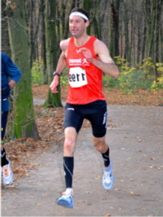

Table of Contents
1 What is Configural Frequency Analysis (CFA) good for?
2 Global and local Chi-square
3 Meehl’s Paradox
4 Significance Testing in CFA
5 CFA Software
What is a configuration?
Situational Action Theory of Crime (SAT; P.-O. Wikström)
What are examples for patterns or configurations?
Athletics: N = 6099 subjects from a listing of best athletes in Germany were selected and stratified according to their surname. Configuration: Among the top ranking athletes of ’heavy weight’ branches of athletics which require body strength and body height, there are relatively more persons that go by the name of ’Smith’ (German: Schmied). In the ’light weight’ branches of athletics, which are more stamina demanding, more person go by the name of ’Tailor’ (German: Schneider)(Stemmler and Bäumler, 2003).

Data Preparation and CFA Analysis in R
# Load the R-package confreq
# If you log on to RStudio, check the marks on the right
library(confreq)
# Create data for gender and vote frequency
gender <- c("males","males","females","females")
vote <- c("pro","con","pro","con")
Freq.d1 <- c(100,50,60,190)
# Combine into a data frame and set class
d1 <- data.frame(gender,vote,Freq=Freq.d1)
class(d1) <- c("data.frame", "Pfreq")
# Compute and show the CFA results
resd1 <- CFA(d1, form="~gender + vote")
summary(resd1, showall = TRUE)function Call:
-------------
Formula: ~gender + vote
Variables: gender vote
Categories: 2 2
results of global tests:
-----------------------
pearson Chi-square test:
Chi df pChi alpha
1 71.11111 1 0 0.05
likelihood ratio test:
Chi df pChi alpha
1 71.91512 1 0 0.05
Information Criteria:
loglik AIC BIC
1 -48.56692 103.1338 101.2927
results of local tests:
-----------------------
Type (+) / Antitype (-) based on: z.pChi ;
with Bonferroni adjusted alpha: 0.0125 pat. obs. exp. Type df z.Chi z.pChi
1 males pro 100 60 + 1 5.164 0.000
2 males con 50 90 - 1 -4.216 0.000
3 females pro 60 100 - 1 -4.000 0.000
4 females con 190 150 + 1 3.266 0.001Example: Age and medical status
Step 1
Edit or open a R Markdown file.
library(confreq)
covid_1 <- read.table("SantePublic.csv", sep=";", header=TRUE, quote="\"")
covid_1 Age Status freq
1 1 1 87
2 1 2 3
3 1 3 0
4 2 1 1111
5 2 2 36
6 2 3 6
7 3 1 272
8 3 2 39
9 3 3 5
10 4 1 349
11 4 2 30
12 4 3 33Step 2
12 cells R commands to prepare the data, compute and show the CFA results class(d1) <- c(“data.frame”, “Pfreq”) d1
covid_2<-dat2fre(fre2dat(covid_1,fact=TRUE))Number of categories for each variable
estimated from data are:
4 3
--> 12 different configurations covid_2 Age Status Freq
1 1 1 87
2 1 2 3
3 1 3 0
4 2 1 1111
5 2 2 36
6 2 3 6
7 3 1 272
8 3 2 39
9 3 3 5
10 4 1 349
11 4 2 30
12 4 3 33Step 3
to start the function CFA first order CFA the results are written into the object ‘result1’ Age: ‘1=<18’, 2=‘18-64’, 3=‘65-74’, 4=‘> 74’ Status: 1=‘diagnosed’, 2=‘intensive care’ 3=‘thought disorder’
resd1 <- CFA(covid_2,alpha=0.05, bintest = FALSE, form="~ Status + Age")
summary(resd1)function Call:
-------------
Formula: ~ Status + Age
Variables: Age Status
Categories: 4 3
results of global tests:
-----------------------
pearson Chi-square test:
Chi df pChi alpha
1 127.5353 6 0 0.05
likelihood ratio test:
Chi df pChi alpha
1 106.5343 6 0 0.05
Information Criteria:
loglik AIC BIC
1 -84.23719 180.4744 183.3838
results of local tests:
-----------------------
Type (+) / Antitype (-) based on: z.pChi ;
with Bonferroni adjusted alpha: 0.004166667 pat. obs. exp. Type df z.Chi z.pChi
1 1 1 87 83.059 . 1 0.432 0.333
2 1 2 3 4.932 . 1 -0.870 0.192
3 1 3 0 2.009 . 1 -1.417 0.078
4 2 1 1111 1064.083 . 1 1.438 0.075
5 2 2 36 63.178 - 1 -3.419 0.000
6 2 3 6 25.739 - 1 -3.891 0.000
7 3 1 272 291.631 . 1 -1.150 0.125
8 3 2 39 17.315 + 1 5.211 0.000
9 3 3 5 7.054 . 1 -0.773 0.220
10 4 1 349 380.227 . 1 -1.601 0.055
11 4 2 30 22.575 . 1 1.563 0.059
12 4 3 33 9.197 + 1 7.849 0.000plot(resd1,type = "z.pChi",fill = c("red","green","grey"))